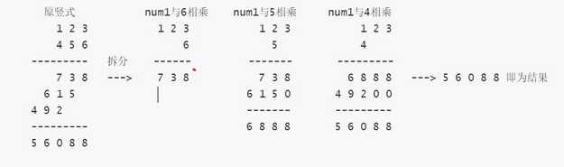
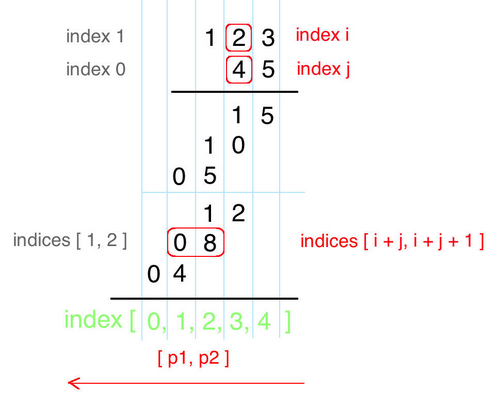

leetcode 43 字符串相乘，涉及算法：竖式运算
题目描述
给定两个以字符串形式表示的非负整数 num1 和 num2，返回 num1 和 num2 的乘积，它们的乘积也表示为字符串形式。
1
2
3
4
5
6
7
8
9
| 示例 1:
输入: num1 = "2", num2 = "3"
输出: "6"
示例 2:
输入: num1 = "123", num2 = "456"
输出: "56088"
|
说明：
- num1 和 num2 的长度小于110。
- num1 和 num2 只包含数字 0-9。
- num1 和 num2 均不以零开头，除非是数字 0 本身。
- 不能使用任何标准库的大数类型（比如 BigInteger）或直接将输入转换为整数来处理。
解题思路
方法一：普通竖式
遍历 num2 每一位与 num1 进行相乘，将每一步的结果进行累加。

注意：
num2 除了第一位的其他位与 num1 运算的结果需要 补0- 计算字符串数字累加其实就是 415. 字符串相加
1
2
3
4
5
6
7
8
9
10
11
12
13
14
15
16
17
18
19
20
21
22
23
24
25
26
27
28
29
30
31
32
33
34
35
36
37
38
39
40
41
42
43
44
45
46
47
48
49
50
51
52
53
54
| class Solution {
public:
string multiply(string num1, string num2) {
if (num1 == "0" || num2 == "0") {
return "0";
}
string ans = "0";
int m = num1.size(), n = num2.size();
for (int i = n - 1; i >= 0; i--) {
string curr;
int add = 0;
for (int j = n - 1; j > i; j--) {
curr.push_back(0);
}
int y = num2.at(i) - '0';
for (int j = m - 1; j >= 0; j--) {
int x = num1.at(j) - '0';
int product = x * y + add;
curr.push_back(product % 10);
add = product / 10;
}
while (add != 0) {
curr.push_back(add % 10);
add /= 10;
}
reverse(curr.begin(), curr.end());
for (auto &c : curr) {
c += '0';
}
ans = addStrings(ans, curr);
}
return ans;
}
string addStrings(string &num1, string &num2) {
int i = num1.size() - 1, j = num2.size() - 1, add = 0;
string ans;
while (i >= 0 || j >= 0 || add != 0) {
int x = i >= 0 ? num1.at(i) - '0' : 0;
int y = j >= 0 ? num2.at(j) - '0' : 0;
int result = x + y + add;
ans.push_back(result % 10);
add = result / 10;
i--;
j--;
}
reverse(ans.begin(), ans.end());
for (auto &c: ans) {
c += '0';
}
return ans;
}
};
|
复杂度分析
- 时间复杂度：$O(mn+n^2)$。m,n分别为 num1 和 num2 的长度。因此计算乘积的总次数是 mn。字符串相加操作共有 n 次，相加的字符串长度最长为 m+n，因此字符串相加的时间复杂度是 $O(mn+n^2)$，总时间复杂度是 $O(mn+n^2)$
- 空间复杂度：O(m+n)。用于存储计算结果。
方法二：优化竖式
该算法是通过两数相乘时，乘数某位与被乘数某位相乘，与产生结果的位置的规律来完成。具体规律如下：
- 乘数 num1 位数为 M，被乘数 num2 位数为 N， num1 x num2 结果 res 最大总位数为 M+N
- num1[i] x num2[j] 的结果为 tmp(位数为两位，”0x”,”xy”的形式)，其第一位位于 res[i+j]，第二位位于 res[i+j+1]

1
2
3
4
5
6
7
8
9
10
11
12
13
14
15
16
17
18
19
20
21
22
23
24
25
26
27
28
29
30
31
32
| class Solution {
public:
string multiply(string num1, string num2) {
if (num1 == "0" || num2 == "0") {
return "0";
}
int m = num1.size(), n = num2.size();
auto ansArr = vector<int>(m + n);
for (int i = m - 1; i >= 0; i--) {
int x = num1.at(i) - '0';
for (int j = n - 1; j >= 0; j--) {
int y = num2.at(j) - '0';
ansArr[i + j + 1] += x * y;
}
}
for (int i = m + n - 1; i > 0; i--) {
ansArr[i - 1] += ansArr[i] / 10;
ansArr[i] %= 10;
}
int index = ansArr[0] == 0 ? 1 : 0;
string ans;
while (index < m + n) {
ans.push_back(ansArr[index]);
index++;
}
for (auto &c: ans) {
c += '0';
}
return ans;
}
};
|
复杂度分析
- 时间复杂度：O(MN*)。M,N 分别为 num1 和 num2 的长度。
- 空间复杂度：O(M+N)。用于存储计算结果。